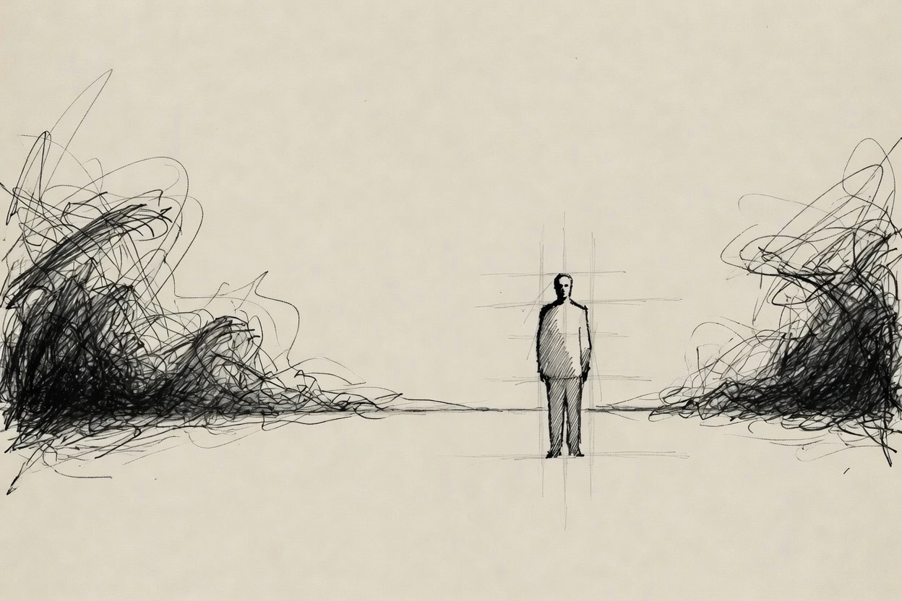

Choosing your vault.

There is no best shape.
A vault is a small number of independent signing authorities plus rules about which of them may act, and when. Start with those people and powers. Devices, vendors, backups, and locations come afterward.
Every vault balances three things, and no arrangement of keys maximises all three at once:
- Sovereignty. How little you depend on anybody else.
- Resilience. Surviving a lost key, or a person who goes quiet.
- Protection under duress. Somebody standing between an attacker and your bitcoin.
Push hard on any one of them and you give something up on another. A vault only you can touch is perfectly sovereign and has nobody to catch a bad moment. A vault with somebody standing in the way protects you under pressure and makes you dependent on that person answering their phone.
So the useful question is not which shape is best, or whether your balance is large enough for multisig. It is who should be able to authorize a transaction alone, who should have to agree during normal use, and who should recover if you cannot act. This page states what each rule does and what it costs, and leaves the choosing to you and whoever advises you.
A cosigner is a check, not a veto.
This is the single most important thing to understand before you compare the shapes, and it is the thing most often described dishonestly elsewhere.
In every three-key Musonius vault, no single key moves your bitcoin. Every path that can spend needs two independent people. A key taken from you, on its own, moves nothing.
But the reverse holds too, and by design. If your cosigner stops answering, goes out of business, or simply refuses, you are not stuck and you do not wait. You spend with your inheritance keyholder instead, as soon as your bitcoin has confirmed once on the network. That route around your cosigner always exists.
No single key moves your bitcoin. No single person can freeze it either.
Those two sentences are one design, not two features. The same property that stops any one person from moving your bitcoin alone is what stops any one person from holding it hostage. You cannot have a cosigner who can veto a transaction and also be certain you will never be stranded by that cosigner. It is the same key and the same power, seen from two sides.
So be careful with anybody who sells you a cosigner as a guaranteed refusal. What an honest cosigner gives you is a second independent person on your everyday spending, which is real protection against the attacks that actually happen: a stolen key, a coerced signature, a convincing fake page. What it does not give you is an absolute no.
The four shapes.
Three of these are ordinary personal vaults. The fourth is the same structure sitting inside a retirement account.
| Simple inheritance | Professional adviser | A cosigner you choose | Retirement (IRA) | |
|---|---|---|---|---|
| Keys | You, inheritance | You, adviser, inheritance | You, cosigner, inheritance | You, adviser, inheritance |
| Everyday spending | You, alone | You and adviser | You and cosigner | You and adviser |
| Can one key spend? | Yes, yours | No | No | No |
| Cosigner goes quiet | Not applicable | Inheritance key, at once | Inheritance key, at once | Inheritance key, at once |
| Strongest at | Simplicity | Duress protection | Duress, on your terms | Long, untouched holding |
| What it costs you | One key carries all | Adviser must respond | Cosigner must be independent | A custodian as well |
Every shape keeps the same long failsafe: if you become unable to act, your two keyholders can recover after a long, clearly signalled wait.
Simple inheritance, and its honest cost.
The simplest shape is two keys: yours, and one inheritance keyholder. You spend on your own, day to day, exactly as you would with an ordinary wallet. If your key becomes unavailable for a long time, your inheritance keyholder can recover the bitcoin after the failsafe period.
What it gives you. The fewest devices and the fewest people. Nobody to coordinate with, nobody to wait for, and inheritance still handled properly rather than left as a note in a drawer.
What it costs you, stated plainly. In this shape your own key spends on its own. That means it does not have the property the three-key vaults have. There is no second person standing between an attacker and your bitcoin, and nobody to slow down or question a transaction that should not be happening. If somebody takes your key and can reach your account, there is no delay and no check.
The second key is still doing real work, but it is a different kind of work than people assume. Your vault's address is built from the rules of both keys, so a stranger sweeping the network for weak keys cannot recognise your vault or test a guess against it. That protects you from being found at random. It does not protect you from somebody who already has your key.
Choose this shape for simplicity and for inheritance. Do not choose it believing it also protects you under duress, because it does not.
Adding a second pair of eyes.
The other three shapes share one structure. You hold one key of three, and no single key can move the bitcoin. What changes between them is who holds the second key, and what kind of account the vault sits inside.
A professional adviser as your cosigner
Your adviser holds the second key and signs alongside you for everyday spending. Because two independent people are required, a stolen key is not enough, and neither is a moment of pressure applied to you alone. Your adviser can never move your bitcoin without you. That is not a policy we enforce, it is what the vault's rules permit.
The trade. Your default everyday path now depends on somebody else being responsive. If your adviser is slow or unreachable, you are not locked out and you are not waiting: you spend with your inheritance keyholder instead. What you lose in that moment is convenience, because you have to reach a different person. You do not lose access.
A cosigner you choose yourself
The same structure, with somebody you pick instead of a professional. Everything above still holds.
The trade, and it is worth reading twice. The protection only works if the person you choose is genuinely independent of you. Not living in your house. Not somebody who answers to you. If the two of you are in the same room, the same pressure that reaches you reaches them at the same moment, and the second key stops being a second person. Most people's first instinct is to pick a spouse or somebody in the household, which is precisely the choice that removes the protection they are trying to buy.
This shape also asks something of the person you name. They need to understand that questioning a request, or declining one, is the whole point of holding the key. A cosigner who signs whatever arrives is not a check.
Bitcoin in a retirement account
The same three-key structure, held inside a self-directed IRA. The keys work exactly as they do in the adviser shape.
The part to keep separate. A retirement account has to do two different jobs, and blurring them is the most common mistake in this corner of the market. Being a proper, compliant IRA comes from your qualified custodian, who holds the account and handles contributions and distributions the way the rules require. Keeping the bitcoin safe comes from how the keys are held. The key arrangement is a security question. It is not what makes your account compliant, and anybody who tells you otherwise is skipping the part that does the work.
The trade. You take on a custodian relationship you would not otherwise need, and everyday spending needs your cosigner in the loop. For bitcoin meant to sit untouched for years, that friction is doing its job. The full treatment is on the retirement page.
The questions people actually ask.
Three come up almost every time: whether you can set a spending limit so small amounts move instantly, why Musonius will not simply hold a key for you, and what happens if your cosigner disappears.
Pick the trade you can live with. Not the one that sounds strongest.